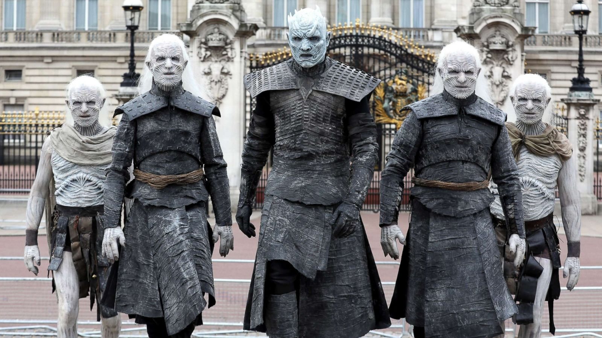
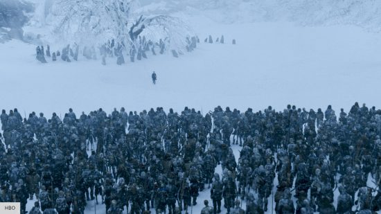

Night King
are an ancient, supernatural race of humanoid ice creatures from the HBO series Game of Thrones and George R.R. Martin's A Song of Ice and Fire novels. Created thousands of years ago by the Children of the Forest to protect themselves from invading humans, the creatures eventually turned on their makers. They possess pale blue eyes, wrinkled icy skin, and immense superhuman strength. Lead by the fearsome Night King, they have the ability to reanimate the dead into mindless, aggressive soldiers known as wights. They reside in the permanent winter of the Lands of Always Winter, located far north of the Seven Kingdoms. To keep them at bay, humanity constructed the colossal Wall of solid ice and established the Night's Watch to guard it. They are highly resistant to standard weaponry, making them nearly unstoppable against traditional armies. However, they can be instantly shattered and destroyed using weapons forged from either Dragonglass other known as obsidian or Valyrian steel.

The Night King is the supreme leader of the White Walkers and the ultimate antagonist in the fantasy television series Game of Thrones. Created thousands of years ago by the Children of the Forest, he was originally a First Man transformed via a dragonglass blade to protect them from mankind. However, he turned against his creators and came to command a massive, supernatural army of the undead known as the Army of the Dead. For millennia, he remained trapped beyond the Wall until he eventually breached it using an undead dragon to launch a full-scale invasion of Westeros. The Night King possesses immense magical powers, including the ability to shatter weapons with a touch and resurrect the dead with a mere gesture. He seeks to bring about an endless winter and completely erase human memory from the world. His ultimate target is Bran Stark, who embodies the history of humanity as the Three-Eyed Raven. In the dramatic Battle of Winterfell, his campaign abruptly ends when Arya Stark stabs him with a Valyrian steel dagger, instantly shattering him and destroying his entire army.

The long night battle is the episode chronicles the brutal, chaotic clash as waves of wights breach the castle's defenses, overwhelming the allied forces of Jon Snow and Daenerys Targaryen. Amidst the devastating losses of several key characters—including Jorah Mormont, Theon Greyjoy, and Lyanna Mormont—the forces of darkness push into the Godswood to destroy the Three-Eyed Raven, Bran Stark. Just as defeat seems absolute, Arya Stark executes a stealth attack to ambush the Night King, shattering him with a Valyrian steel dagger and instantly collapsing his entire undead army to save humanity.
